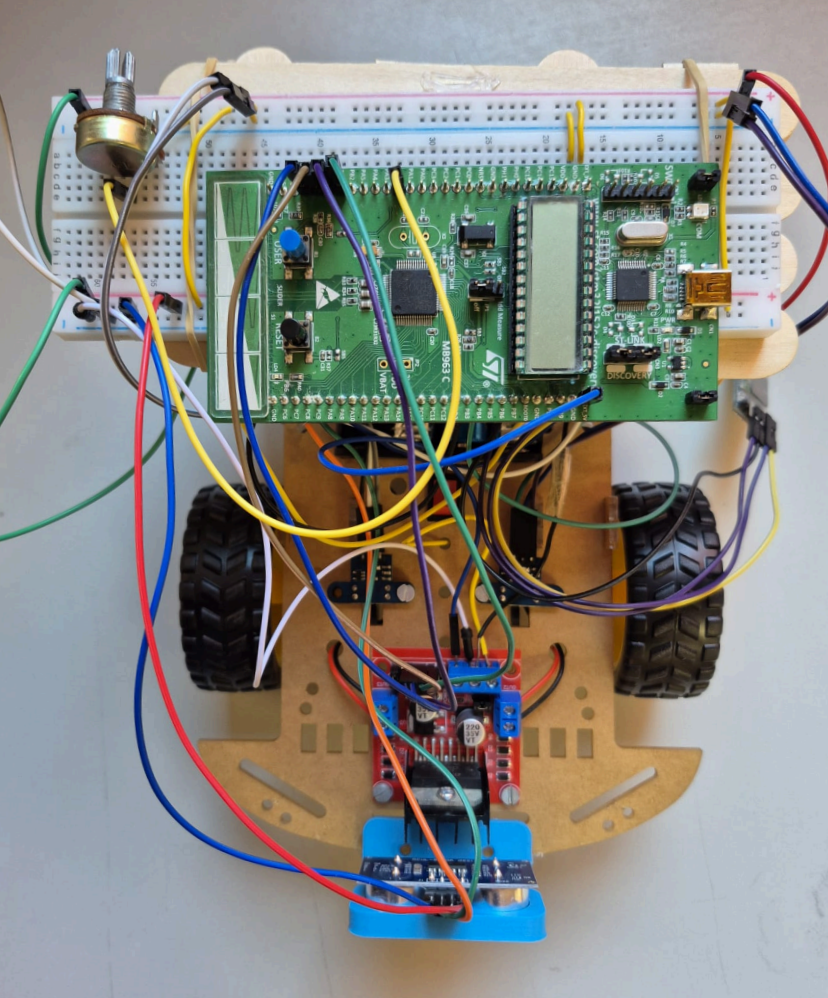

SDBM-FULL-PROJECT: Autonomous Vehicle Control System
This project implements a fully functional autonomous vehicle control system using the STM32L152RETX microcontroller. The system provides both manual remote control via Bluetooth Low Energy (BLE) and automatic operation with bidirectional obstacle detection. It integrates motor control, sensor readings, and communication protocols to achieve robust vehicle navigation.

Key Features
- Remote Control via BLE: Control the vehicle wirelessly using Bluetooth commands
- Automatic Mode: Intelligent obstacle detection and avoidance using ultrasonic sensors
- Manual Mode: Direct control for start, stop, direction changes
- Bidirectional Obstacle Detection: Sensors detect obstacles in front and potentially rear
- Motor Control: Precise DC motor control with speed adjustment
- Sensor Integration: Ultrasonic sensors for distance measurement, potentiometer for speed control
- Audio Feedback: Buzzer alerts for obstacle warnings
- Interrupt-Driven Architecture: Efficient handling of ADC, UART, timer, and external interrupts
Hardware Requirements
- STM32L152RETX microcontroller
- DC motors with H-bridge driver
- Ultrasonic sensors (HC-SR04 or similar) for obstacle detection
- Potentiometer for speed adjustment
- Buzzer for audio alerts
- BLE module for wireless communication
Software Architecture
The project uses an interrupt-driven architecture with key components like ADC, UART, Timer, and EXTI interrupts for efficient processing.
Operation Modes
- Manual Mode: Control via BLE commands for start/stop, direction, and speed
- Automatic Mode: Autonomous obstacle detection, avoidance, and audio alerts
Key Learnings
- Voltage management and component isolation
- Buzzer operation (active low)
- Battery efficiency and power consumption
- Turning precision and calibration
Technologies Used
STM32L152RETX
BLE
Ultrasonic Sensors
DC Motors
C/C++
Embedded Systems